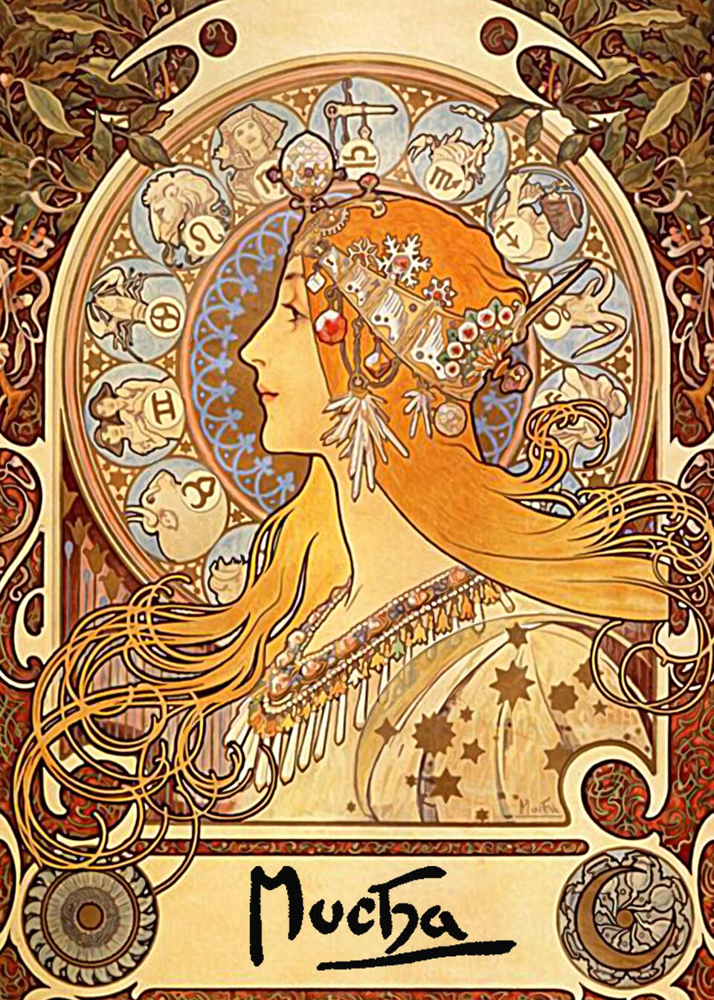
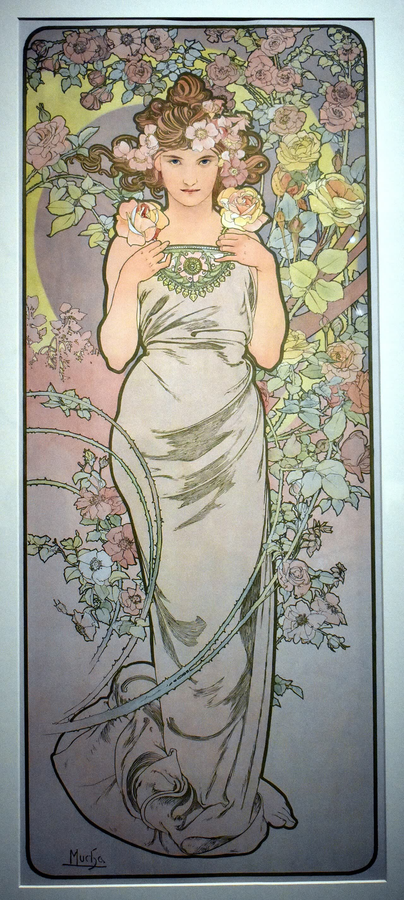
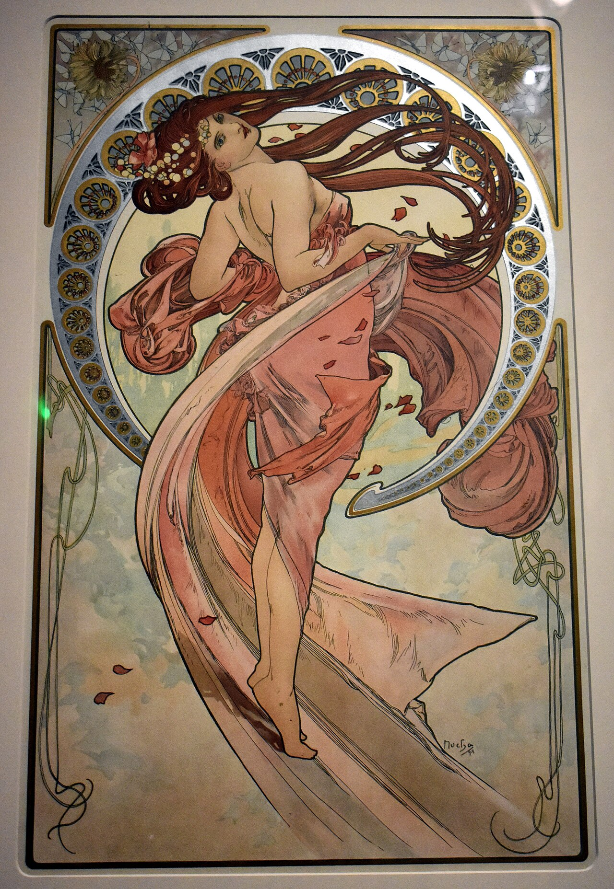
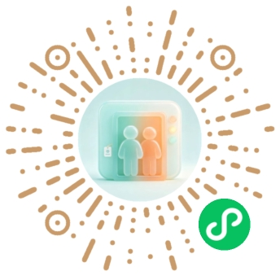
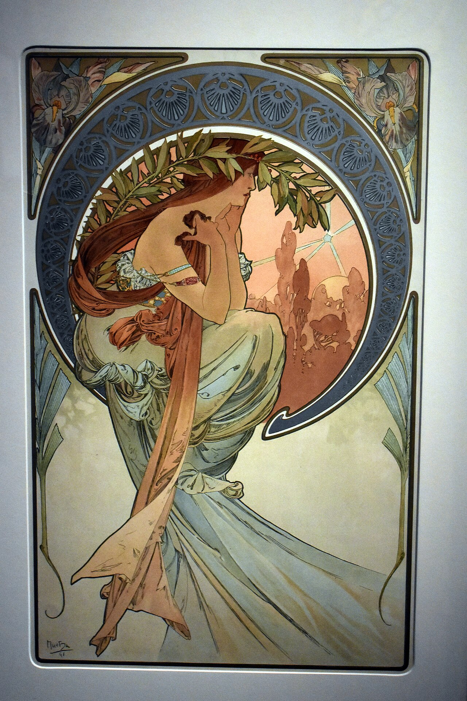
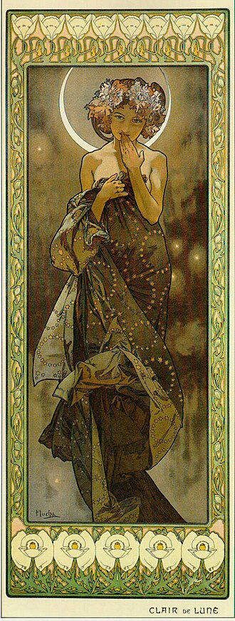
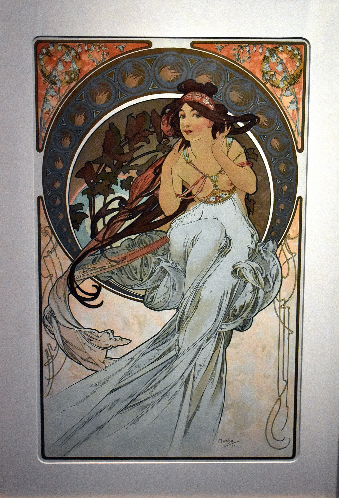

身份
脑机接口专业大一学生


脑机接口专业大一学生
CS · BMI 交叉方向
兴趣驱动，万事不求人
深圳，中国
about me_dejavuGallery 代码之外的碎片，随便看看。


一款宿舍状态共享小程序，支持四人状态联动、值日轮换、寝室规定版本管理、意见反馈投票与换床申请，14天内从零到一完成开发，现已正式上线。
用问问题构建思维导图，用思维导图重构知识体系
背词组的极简卡片工具
如果可以把一本书变成交互式文字游戏
捡到一台 dos 老电脑……

个人主页 V1 上线
宿舍状态栏小程序上线

你好，我是 SHAAARK 的 AI 分身
我还在开发中，暂时不能回复你
未来你可以在这里问我关于项目的问题

欢迎交流 CS / BMI 交叉方向，或任何有趣的项目想法。